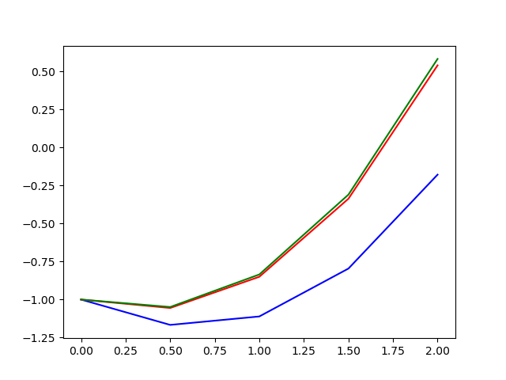
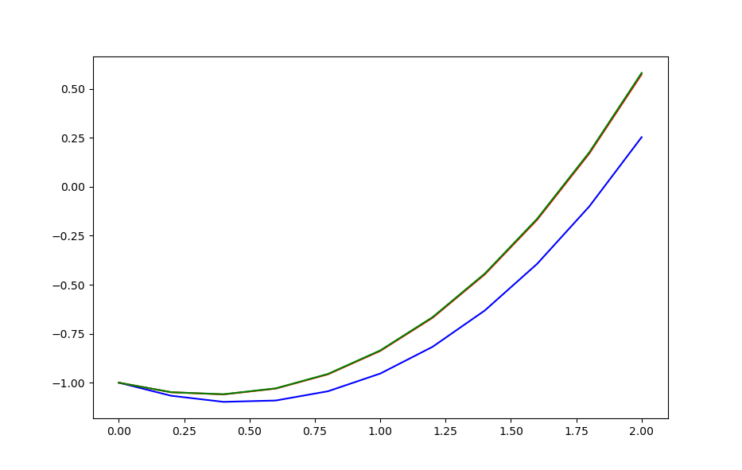
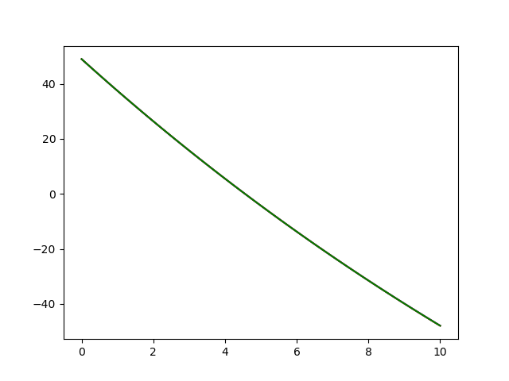

Nombres:
Francisco Vicente Suárez Bellón C212
Maria de Lourdes Choy C212
Carla Sunami Pérez Valera C212
Lázaro David Alba Ajete C211
import numpy as np import matplotlib.pyplot as plt import math f = lambda x,y : x+y**1/3 f2 = lambda t,v : -0.04*v - 9.8 Solutionf2 = lambda t: (294*math.e**(-t/25)) - 245 def Method_euler(Xn,Yn,h,f): yn1 = Yn + (h * f(Xn,Yn)) return yn1 def Method_eulerMejorado(Xn,Yn,h,f): k1 = f(Xn,Yn) un1 = Yn + (h * k1) k2 = f(Xn+h,un1) yn1 = Yn + (h * (1/2)*(k1 + k2)) return yn1 def Runge_Kutta(Xn,Yn,h,f): k1 = f(Xn,Yn) k2 = f( Xn +(1/2)*h,Yn+(1/2)*h*k1) k3 = f(Xn +(1/2)*h,Yn+(1/2)*h*k2) k4 = f(Xn+h,Yn+ h*k3) Yn1 = Yn + (h/6 *(k1 + 2*k2 + 2*k3 + k4)) return Yn1 def Numeric_Methods(X0,Y0,h,f,method,end,rnd): X = np.arange(X0,end+h,h) Y = [Y0] for i in range(len(X)-1): Y.append(round(method(X[i],Y[i],h,f),rnd)) return X,Y def splitInterval(lis1,lis2,n): hx = int(len(lis1)/n) X =[] Y =[] for i in np.arange(0,len(lis1),hx): X.append(round(lis1[i],2)) Y.append(lis2[i]) return X,Y def printer(list): for i in range(len(list)): print('\n') print(list[i]) print("--------------------------------------") print("--------------------------------------") def EvalSolution(X0,h,f,end): X = np.arange(X0,end+h,h) Y = [] for i in range(len(X)): Y.append(round(f(X[i]),2)) return X,Y #Descomentar esto para ver las soluciones y el ploteo #----------------------------------------------------------- # print("Solución 1") #----------------------------------------------------------- # he1 = Numeric_Methods(0,-1,0.1,f,Method_euler,2,4) # he2 = Numeric_Methods(0,-1,0.02,f,Method_euler,2,4) # he3 = Numeric_Methods(0,-1,0.004,f,Method_euler,2,4) # he4 = Numeric_Methods(0,-1,0.0008,f,Method_euler,2,4) # e1 = splitInterval(he1[0],he1[1],10) # e2 = splitInterval(he2[0],he2[1],10) # e3 = splitInterval(he3[0],he3[1],10) # e4 = splitInterval(he4[0],he4[1],10) # print(e1) # printer(e1[1]) # printer(e2[1]) # printer(e3[1]) # printer(e4[1]) # #------------------------------------------------------------ # print("Solución 2") # #------------------------------------------------------------ # hr1 = Numeric_Methods(0,-1,0.2,f, Runge_Kutta,2,6) # hr2 = Numeric_Methods(0,-1,0.1,f, Runge_Kutta,2,6) # hr3 = Numeric_Methods(0,-1,0.05,f, Runge_Kutta,2,6) # hr4 = Numeric_Methods(0,-1,0.025,f,Runge_Kutta,2,6) # r1 = splitInterval(hr1[0],hr1[1],5) # r2 = splitInterval(hr2[0],hr2[1],5) # r3 = splitInterval(hr3[0],hr3[1],5) # r4 = splitInterval(hr4[0],hr4[1],5) # print(r1) # printer(r1[1]) # printer(r2[1]) # printer(r3[1]) # printer(r4[1]) #------------------------------------------------------------ # Representación de los 3 métodos con distintos pasos #------------------------------------------------------------ #e1 = Numeric_Methods(0,-1,0.5,f,Method_euler,2) #m1 = Numeric_Methods(0,-1,0.5,f,Method_eulerMejorado,2) #r1 = Numeric_Methods(0,-1,0.5,f,Runge_Kutta,2) #e2 = Numeric_Methods(0,-1,0.2,f,Method_euler,2) #m2 = Numeric_Methods(0,-1,0.2,f,Method_eulerMejorado,2) #r2 = Numeric_Methods(0,-1,0.2,f,Runge_Kutta,2) # #plt.plot(e1[0],e1[1],"b") #plt.plot(m1[0],m1[1],"r") #plt.plot(r1[0],r1[1],"g") #plt.show() #plt.plot(e2[0],e2[1],"b") #plt.plot(m2[0],m2[1],"r") #plt.plot(r2[0],r2[1],"g") #------------------------------------------------------------ # print("Solución 3") # ------------------------------------------------------------ # rk1 = Numeric_Methods(0,49,0.2,f2,Method_eulerMejorado,10,2) # rk2 = Numeric_Methods(0,49,0.1,f2,Method_eulerMejorado,10,2) # rks = EvalSolution(0,0.1,Solutionf2,10) # plt.plot(rk1[0],rk1[1],"b") # plt.plot(rk2[0],rk2[1],"r") # plt.plot(rks[0],rks[1],"g") # plt.show() # s1 = splitInterval(rk1[0],rk1[1],10) # s2 = splitInterval(rk2[0],rk2[1],10) # s3 = splitInterval(rks[0],rks[1],10) # print(s1) # printer(s1[1]) # printer(s2[1]) # printer(s3[1]) # ------------------------------------------------------------
| x | with h = 0.1 | with h = 0.02 | with h = 0.004 | with h = 0.0008 |
|---|---|---|---|---|
| 0.0 | -1 | -1 | -1 | -1 |
| 0.2 | -1.0577 | -1.0505 | -1.0487 | -1.0481 |
| 0.4 | -1.0788 | -1.0632 | -1.0596 | -1.0595 |
| 0.6 | -1.0606 | -1.0355 | -1.0298 | -1.0285 |
| 0.8 | -1.0005 | -0.9646 | -0.9567 | -0.9552 |
| 1.0 | -0.8956 | -0.8476 | -0.8373 | -0.8356 |
| 1.2 | -0.743 | -0.6815 | -0.6684 | -0.6661 |
| 1.4 | -0.5394 | -0.4626 | -0.4464 | -0.4434 |
| 1.6 | -0.2813 | -0.1874 | -0.1677 | -0.1649 |
| 1.8 | 0.0349 | 0.1479 | 0.1712 | 0.1755 |
| 2.0 | 0.4133 | 0.5474 | 0.575 | 0.5793 |
| x | with h = 0.2 | with h = 0.1 | with h = 0.05 | with h = 0.025 |
|---|---|---|---|---|
| 0.0 | -1 | -1 | -1 | -1 |
| 0.4 | -1.058953 | -1.058953 | -1.058953 | -1.058955 |
| 0.8 | -0.955158 | -0.955157 | -0.955159 | -0.955161 |
| 1.2 | -0.665402 | -0.6654 | -0.665402 | -0.665404 |
| 1.6 | -0.163161 | -0.163158 | -0.16316 | -0.16316 |
| 2.0 | 0.581872 | 0.581875 | 0.581873 | 0.581872 |
Nota:


Solución:
| t | with h = 0.2 | with h = 0.1 | Y exacta |
|---|---|---|---|
| 0.0 | 49 | 49 | 49.0 |
| 1.0 | 37.47 | 37.47 | 37.47 |
| 2.0 | 26.39 | 26.39 | 26.4 |
| 3.0 | 15.75 | 15.75 | 15.75 |
| 4.0 | 5.53 | 5.53 | 5.53 |
| 5.0 | -4.29 | -4.29 | -4.29 |
| 6.0 | -13.73 | -13.73 | -13.73 |
| 7.0 | -22.79 | -22.79 | -22.8 |
| 8.0 | -31.5 | -31.51 | -31.51 |
| 9.0 | -39.87 | -39.89 | -39.88 |
| 10.0 | -47.91 | -47.94 | -47.93 |
